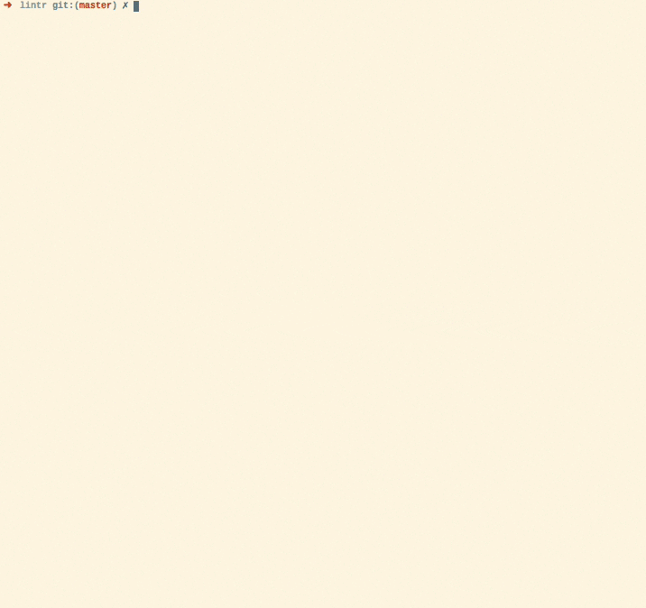

lintr provides static code analysis for R. It checks for adherence to a given style, identifying syntax errors and possible semantic issues, then reports them to you so you can take action. Watch lintr in action in the following animation:

lintr is complementary to the {styler} package which automatically restyles code, eliminating some of the problems that lintr can detect.
Installation
Install the stable version from CRAN:
install.packages("lintr")Or the development version from GitHub:
# install.packages("remotes")
remotes::install_github("r-lib/lintr")Usage
And then you can create a configuration file and run selected linters:
lintr::use_lintr(type = "tidyverse")
# in a project:
lintr::lint_dir()
# in a package:
lintr::lint_package()To see a list of linters included for each configuration:
# tidyverse (default)
names(lintr::linters_with_defaults())
# full
names(lintr::all_linters())Setting up GitHub Actions
usethis provides helper functions to generate lint workflows for GitHub Actions:
# in a project:
usethis::use_github_action("lint-project")
# in a package:
usethis::use_github_action("lint")You can also run lintr during continuous integration or within your IDE or text editor. See vignette("continuous-integration") and vignette("editors") for more details.
Without further configuration, this will run the default linters. See vignette("lintr") to learn how to modify these defaults.
Code of Conduct
Please note that the lintr project is released with a Contributor Code of Conduct. By contributing to this project, you agree to abide by its terms.